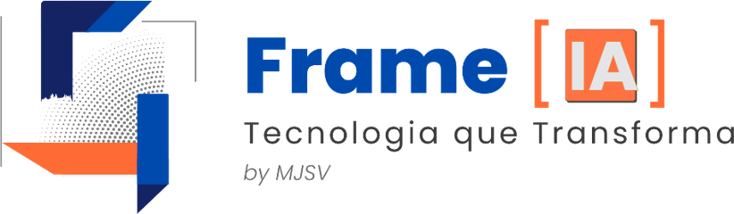

← Voltar para o BlogA Inteligência Artificial já deixou de ser algo do futuro. Ela é a ferramenta do agora. Para o pequeno e médio empreendedor, a IA não serve apenas para "bater papo", mas para ganhar velocidade onde o trabalho humano é lento e repetitivo.
Abaixo, listamos as 5 formas mais eficientes de integrar essa tecnologia na sua rotina hoje mesmo, com as ferramentas que estão dominando o mercado.
Use IAs para resumir artigos extensos, explicar conceitos técnicos difíceis para a sua equipe ou criar planos de estudo para novas habilidades. Elas funcionam como um tutor particular disponível 24 horas por dia.
Esqueça começar um slide do zero. A IA estrutura o conteúdo, sugere o layout e gera o primeiro rascunho completo a partir de um simples comando de texto.
Gere rascunhos de e-mails, roteiros para vídeos de vendas, legendas para redes sociais ou revise seus próprios textos para garantir o tom de voz correto da sua marca.
Transforme ideias em realidade visual sem precisar de bancos de imagens genéricos. Descreva o que você imagina e crie fotos e ilustrações exclusivas para o seu negócio.
Crie vídeos curtos a partir de texto ou imagem. Ideal para demonstrações de produtos rápidos em redes sociais ou comunicações internas que precisam de mais engajamento que um simples texto.
O carrossel completo com as +15 ferramentas sugeridas está disponível no nosso LinkedIn. Clique no botão abaixo para conferir.
Ver no LinkedIn →